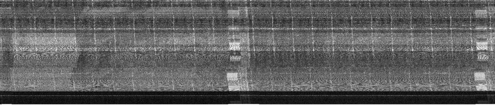
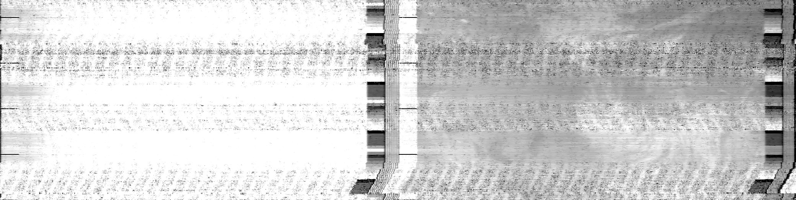

Our Results
The antenna recieves WAV files that ...(program name).. turns into images of....
-
NOAA 18 2/16/2019 19:13
 -
NOAA 15 2/16/2019 19:37

-
NOAA 18 2/16/2019 20:54
 -
NOAA 19 2/17/2019 7:16

-
NOAA 19 2/17/2019 7:19

-
NOAA 19 2/17/2019 7:50